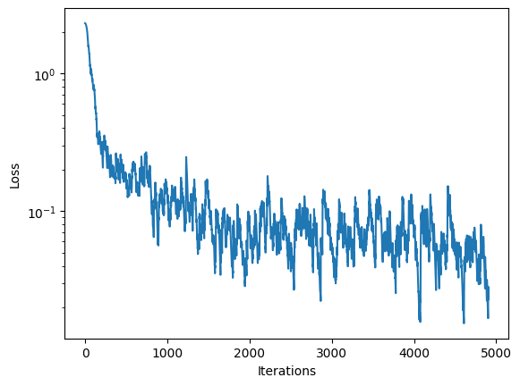

2023년 MIT에서 강의된 6.S191 강좌의 Lab의이해를 돕기위해 작성되었습니다.
Lab에 대해서는 이곳에서 확인가능하며, 해당 강좌는 여기서 확인가능합니다.
- Lab1-Part1 Intro to Tensorflow
- Lab1-Part2 Music Generation
- Lab2-Part1 MNIST
- Lab2-Part2 Face Detection
- Lab3-Part1 Introduction Caspa
- Lab3-Part2 Bias and Uncertainty
이번 과제에서는 CNN 모델을 통해 손으로 쓰여진 0 ~ 9 의 글씨를 예측하는 모형을 만듭니다.
60,000 개의 train 이미지와 10,000 개의 test 이미지로 이루어진 MNIST 데이터 셋을 활용할 것입니다.
# Import Tensorflow 2.0
%tensorflow_version 2.x
import tensorflow as tf
!pip install mitdeeplearning
import mitdeeplearning as mdl
import matplotlib.pyplot as plt
import numpy as np
import random
from tqdm import tqdm
# Check that we are using a GPU, if not switch runtimes
# using Runtime > Change Runtime Type > GPU
assert len(tf.config.list_physical_devices('GPU')) > 03.1 MNIST 데이터
데이터를 다운받고, 어떻게 이루어져있는지 확인하도록 하겠습니다.
mnist = tf.keras.datasets.mnist
(train_images, train_labels), (test_images, test_labels) = mnist.load_data()
# convert dim from (n_imgs x 28 x 28) to (n_imgs x 28 x 28 x 1) to make channel
train_images = (np.expand_dims(train_images, axis=-1)/255.).astype(np.float32)
train_labels = (train_labels).astype(np.int64)
test_images = (np.expand_dims(test_images, axis=-1)/255.).astype(np.float32)
test_labels = (test_labels).astype(np.int64)plt.figure(figsize=(10,10))
random_inds = np.random.choice(60000,36)
for i in range(36):
plt.subplot(6,6,i+1)
plt.xticks([])
plt.yticks([])
plt.grid(False)
image_ind = random_inds[i]
plt.imshow(np.squeeze(train_images[image_ind]), cmap=plt.cm.binary)
plt.xlabel(train_labels[image_ind])3.2 MLP 구조의 모델
CNN 모델을 만들기 앞서 MLP 구조의 모델을 먼저 만들어 보겠습니다.
하기의 이미지와 같이 이미지는 총 784 (28 x 28)의 픽셀을 가지고 있습니다.
이 784개의 input을 128개의 hidden layer로 통과시킨 뒤 10개 (0 ~ 9)의 output layer로 출력해보겠습니다.
def build_fc_model():
fc_model = tf.keras.Sequential([
tf.keras.layers.Flatten(),
tf.keras.layers.Dense(128, activation = 'relu'),
tf.keras.layers.Dense(10, activation = 'softmax')
])
return fc_model
model = build_fc_model()
# configure loss and opimizer
model.compile(optimizer=tf.keras.optimizers.SGD(learning_rate=1e-1),
loss='sparse_categorical_crossentropy',
metrics=['accuracy'])
BATCH_SIZE = 64
EPOCHS = 5
# train model
model.fit(train_images, train_labels, batch_size=BATCH_SIZE, epochs=EPOCHS) Epoch 1/5
938/938 [==============================] - 8s 3ms/step - loss: 0.3753 - accuracy: 0.8948
Epoch 2/5
938/938 [==============================] - 3s 3ms/step - loss: 0.1977 - accuracy: 0.9432
Epoch 3/5
938/938 [==============================] - 3s 3ms/step - loss: 0.1493 - accuracy: 0.9573
Epoch 4/5
938/938 [==============================] - 3s 3ms/step - loss: 0.1200 - accuracy: 0.9654
Epoch 5/5
938/938 [==============================] - 3s 3ms/step - loss: 0.1012 - accuracy: 0.9715
<keras.callbacks.History at 0x7f5b20e0ae60>대략 train 데이터에서 97% 정도의 정확도를 보이는 것을 알 수 있습니다.
이제 test 데이터에서의 결과를 확인해봅시다.
test_loss, test_acc = model.evaluate(test_images, test_labels)
print('Test accuracy:', test_acc)313/313 [==============================] - 1s 3ms/step - loss: 0.1048 - accuracy: 0.9696
Test accuracy: 0.9696000218391418test 데이터에서의 결과가 약간 낮음을 알 수 있습니다. 이렇게 train 데이터와 test 데이터에서 차이가 날 때, overfitting되었다고 합니다.
이제 CNN 모델을 만들어봅시다.
3.3 CNN 구조의 모델
하기와 같은 구조의 모델을 만들어 보겠습니다.

def build_cnn_model():
cnn_model = tf.keras.Sequential([
tf.keras.layers.Conv2D(32, (3, 3), padding = 'same', activation = tf.nn.relu),
tf.keras.layers.MaxPool2D(pool_size = (2, 2)),
tf.keras.layers.Conv2D(64, (3, 3), padding = 'same', activation = tf.nn.relu),
tf.keras.layers.MaxPool2D(pool_size = (2, 2)),
tf.keras.layers.Flatten(),
tf.keras.layers.Dense(128, activation=tf.nn.relu),
# TODO: Define the last Dense layer to output the classification
# probabilities. Pay attention to the activation needed a probability
# output
tf.keras.layers.Dense(10, activation = tf.nn.softmax)
])
return cnn_model
cnn_model = build_cnn_model()
# Initialize the model by passing some data through
cnn_model.predict(train_images[[0]])
# Print the summary of the layers in the model.
print(cnn_model.summary())Model: "sequential_1"
_________________________________________________________________
Layer (type) Output Shape Param #
=================================================================
conv2d (Conv2D) (None, 28, 28, 32) 320
max_pooling2d (MaxPooling2D (None, 14, 14, 32) 0
)
conv2d_1 (Conv2D) (None, 14, 14, 64) 18496
max_pooling2d_1 (MaxPooling (None, 7, 7, 64) 0
2D)
flatten_1 (Flatten) (None, 3136) 0
dense_2 (Dense) (None, 128) 401536
dense_3 (Dense) (None, 10) 1290
=================================================================
Total params: 421,642
Trainable params: 421,642
Non-trainable params: 0
_________________________________________________________________cnn_model.compile(optimizer='adam', loss='sparse_categorical_crossentropy', metrics=['accuracy'])
cnn_model.fit(train_images, train_labels, batch_size = BATCH_SIZE, epochs = EPOCHS)Epoch 1/5
938/938 [==============================] - 8s 5ms/step - loss: 0.1493 - accuracy: 0.9546
Epoch 2/5
938/938 [==============================] - 5s 5ms/step - loss: 0.0447 - accuracy: 0.9860
Epoch 3/5
938/938 [==============================] - 7s 8ms/step - loss: 0.0297 - accuracy: 0.9905
Epoch 4/5
938/938 [==============================] - 5s 5ms/step - loss: 0.0217 - accuracy: 0.9930
Epoch 5/5
938/938 [==============================] - 4s 4ms/step - loss: 0.0165 - accuracy: 0.9948test_loss, test_acc = model.evaluate(test_images, test_labels)
print('Test accuracy:', test_acc)313/313 [==============================] - 1s 2ms/step - loss: 0.1048 - accuracy: 0.9696
Test accuracy: 0.9696000218391418이제 CNN 모델을 통해 예측을 해보겠습니다.
predictions = cnn_model.predict(test_images)
predictions[0]array([4.6900855e-10, 5.6617080e-09, 3.1779661e-09, 3.1454579e-08,
4.5877988e-13, 7.0875771e-11, 3.0195982e-18, 9.9999988e-01,
5.5570687e-11, 1.1235415e-07], dtype=float32)10개의 output layer로 모델을 정의하였기에, 10개의 요소를 포함한 array가 출력됩니다.
softmax는 여러개의 출력값을 확률적으로 나타내어 주기에, np.argmax를 통하여 어떤 값의 확률이 가장 큰지 알 수 있습니다.
prediction = np.argmax(predictions[0])
print(prediction)7정말로 7이 맞는지 확인해 봅시다.
print("Label of this digit is:", test_labels[0])
plt.imshow(test_images[0,:,:,0], cmap=plt.cm.binary)좀 더 다양한 결과들을 확인해보겠습니다.
1.4 GradientTape를 사용한 CNN
1.3에서의 예시와 같이 모델의 optimizer와 loss를 사용할 경우 매우 편리하고 직관적이지만, 모델에 대한 통제력이 떨어집니다.
이에 대한 대안으로 tf.GradientTape.gradient를 활용해보겠습니다.
### 이전의 방식
cnn_model.compile(optimizer='adam', loss='sparse_categorical_crossentropy', metrics=['accuracy'])
cnn_model.fit(train_images, train_labels, batch_size = BATCH_SIZE, epochs = EPOCHS)### 새로운 방식
cnn_model = build_cnn_model()
batch_size = 12
loss_history = mdl.util.LossHistory(smoothing_factor=0.95) # to record the evolution of the loss
plotter = mdl.util.PeriodicPlotter(sec=2, xlabel='Iterations', ylabel='Loss', scale='semilogy')
optimizer = tf.keras.optimizers.SGD(learning_rate=1e-2) # define our optimizer
if hasattr(tqdm, '_instances'): tqdm._instances.clear() # clear if it exists
for idx in tqdm(range(0, train_images.shape[0], batch_size)):
# First grab a batch of training data and convert the input images to tensors
(images, labels) = (train_images[idx:idx+batch_size], train_labels[idx:idx+batch_size])
images = tf.convert_to_tensor(images, dtype=tf.float32)
# GradientTape to record differentiation operations
with tf.GradientTape() as tape:
logits = cnn_model(images)
loss_value = tf.keras.backend.sparse_categorical_crossentropy(labels, logits)
loss_history.append(loss_value.numpy().mean()) # append the loss to the loss_history record
plotter.plot(loss_history.get())
# Backpropagation
grads = tape.gradient(loss_value, cnn_model.trainable_variables)
optimizer.apply_gradients(zip(grads, cnn_model.trainable_variables))